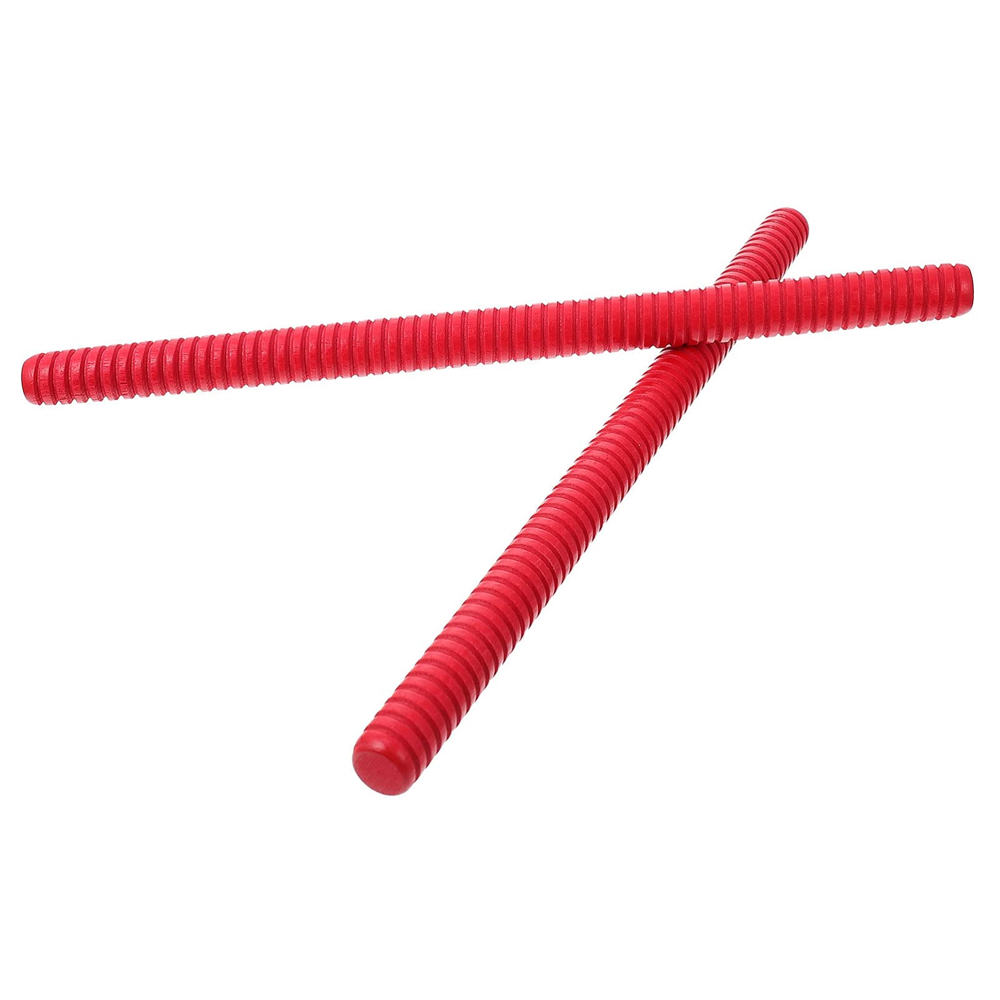
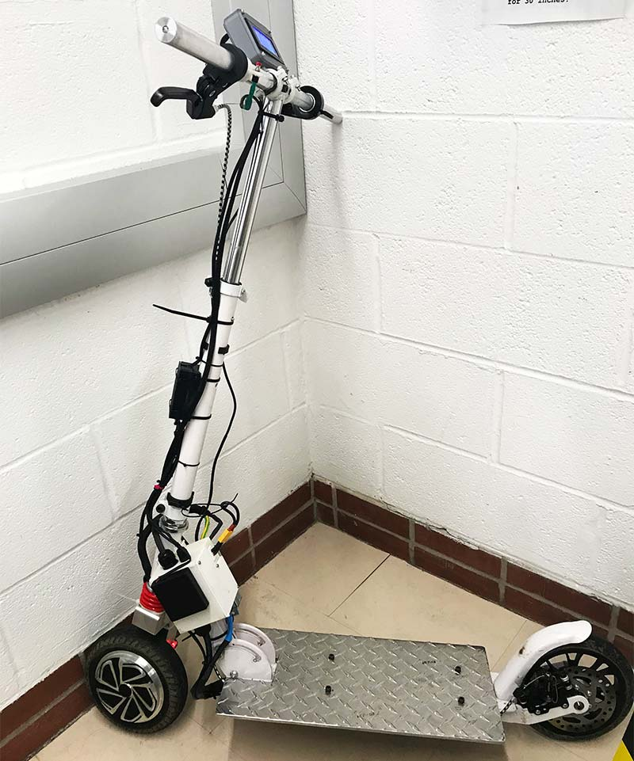

Final Project Ideas
Creating a Japanese Otamatone Musical Instrument
In regarding to the Otamatone project, some of the critical components that I would have to get is the actual frame of the instrument, the synthesizer board that can convert a resistor signal from a soft potentiometer into an audio signal. I was inspired to build this project because I've always had a dream of building an extremely annoying instrument that was equally easy to carry at the same time. I knew that the otamatone had to be my target because of it's slender and unnecessary components that can be packed even further in a small frame. I would want it to be somewhat like a harmonica, but like with more power output as a result. I already have a copy of the components, but I know I'd have to create the synthesizer board in some way or another, which make still involve an external component. I might make use of soft electronic board in order to make it function as how I would like to on the otherhand. One part of my inspiration as well was the fallen down theme sung on an otamatone, which I thought was cool and interesting, making me want to build one.
Creating an Electric Scooter from Scratch
A much more complicated project which requires one primary component, a motor wheel. From the motor wheel other components become easier to acquire, such as the building the actual aluminum structre of the scooter, and then an ebike controller which can then handle the signal between braking, and speed control. I was initially inspired to build an electric scooter because I would love to not walk. It's a pain walking from my dorm all the way to the dining hall which is a little less than half a mile away. As a result, I think it'd be nice to have a form of transportation that was ice and waterproof! I know that this project may be more difficult than others, as it becomes increasingly difficult to acquire the raw materials for the project, like the metal and all the electronic components. I believe it's a very applicable project that can be done even in smaller prototype stages, meaning it doesn't need to be entirely electronic. Perhaps, I can just put a few electronic components on the actual scooter that would calculate my speed or weather instead of actually controlling the wheel through a motor. Furthermore, the frame could be made out of wood instead of predominantly made out of metal as well.
